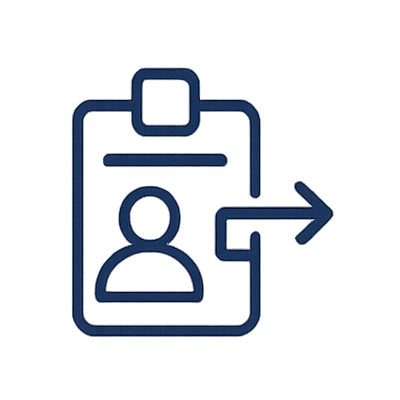

Urban Mobility Data Hub
Espacio de datos de movilidad urbana para la plataforma interoperable de conducción autónoma de la ciudad de Valencia.
Urban Mobility Data Hub es un ecosistema de datos abierto y seguro para la movilidad urbana que pretende facilitar la interoperabilidad promoviendo el uso de estándares europeos y la soberanía del dato.
Proporciona una base abierta para el desarrollo de iniciativas de movilidad inteligente, impulsando la colaboración entre administraciones, empresas e instituciones de investigación y la adopción de soluciones sostenibles y basadas en datos.
Objetivos
Facilitar la coordinación de vehículos autónomos para el transporte de pasajeros y la distribución de mercancías mediante algoritmos avanzados basados en inteligencia artificial.
Optimizar el uso y mantenimiento de infraestructuras urbanas inteligentes, mejorando la eficiencia operativa y contribuyendo a la sostenibilidad medioambiental.
Documentación
Arquitectura
Visión general de la infraestructura y sus componentes principales.
Guía de despliegue
Como desplegar el entorno paso a paso.
Uso del Dataspace
Publicar datasets, negociar y consumir datos dentro del entorno del Dataspace.
Seguridad y autenticación
Gestión de accesos y control de identidades con Keycloak y OIDC y control de acceso por políticas.
Marketplace
Publica, descubre y comparte activos de datos en el ecosistema.
Onboarding
Como formar parte del espacio de datos.